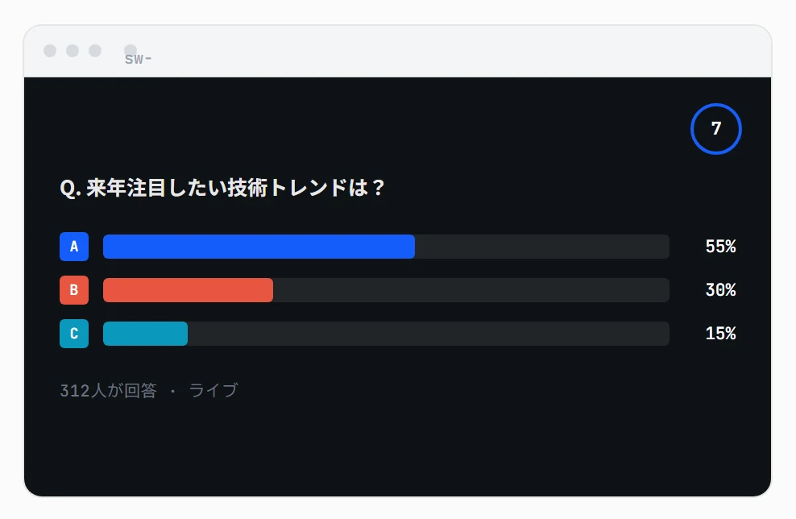
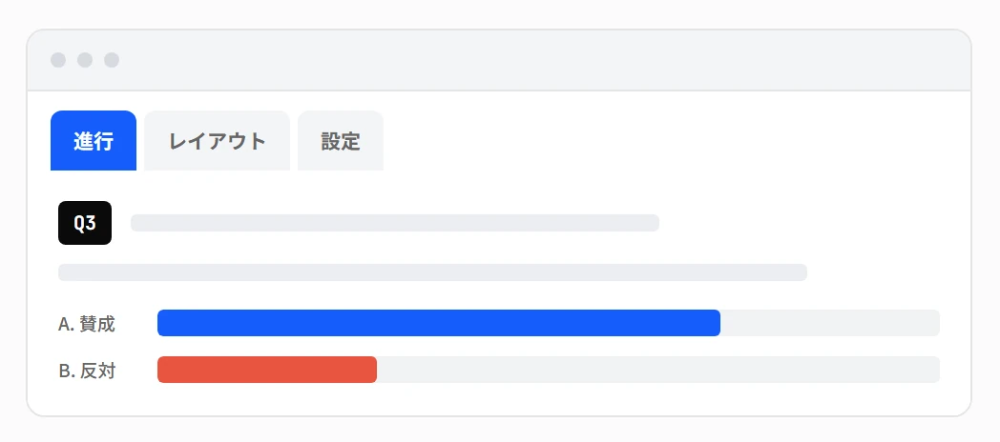
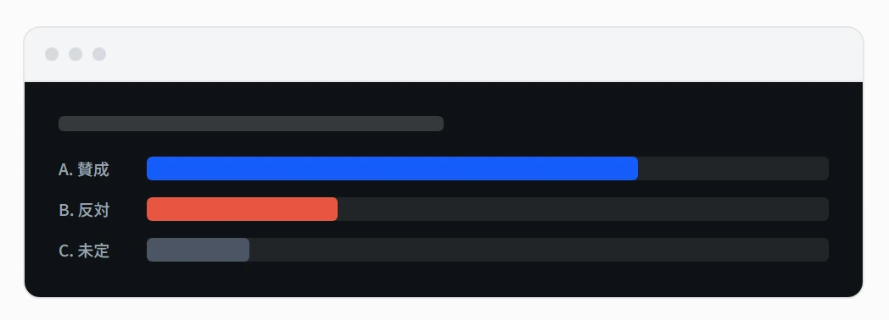
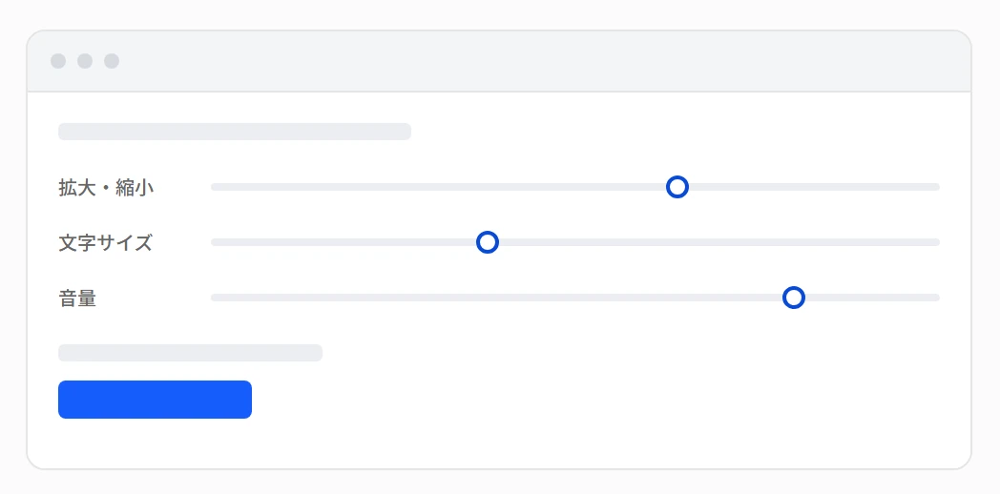
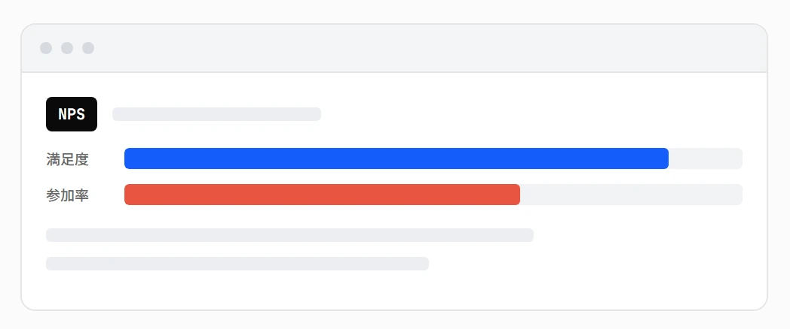

01
スコア・ランキング
クイズモードは正誤・回答速度で自動採点。正解者/回答者からの抽選機能も搭載。
リアルタイム会場参加型アンケート・クイズシステム
会場の反応を、
その場で可視化する。
QRを読むだけで参加できるリアルタイムARS「PULSE」。講演会・セミナー・研修・カンファレンスの投票・クイズ・アンケートを、1000人規模でも安定して回します。SEVENTHWELLが企画から本番運用までサポートします。


管理画面
台本モード・質問カード・下書きロックなど、本番中の操作ミスを防ぐ工夫を詰め込みました。

スクリーン
題名・グラフ・ロゴ・タイマー・QR・背景をドラッグで配置。質問ごとに個別の見た目を持たせることもできます。

設定
文字サイズ・位置・色・デザインを、実際の画面と同じプレビューを見ながら調整できます。数値を入力して確認、の手戻りがありません。

レポート
イベント終了後、ボタンひとつでNPS・感情分析・クロス集計まで入ったレポートが完成。PDFで保存・印刷してそのままクライアントに共有できます。
01
クイズモードは正誤・回答速度で自動採点。正解者/回答者からの抽選機能も搭載。
02
イベントごとに部屋を分けて同時運用。ダッシュボードで全会場を横断監視。
03
30分おきに自動でバックアップ。イベント全体のデータをまるごとJSONで書き出すこともできます。
04
画面にQRを常時表示可能。読み込み忘れた参加者もその場でスキャンして合流できます。
05
PCがなくても、進行から出題・締切・結果表示までスマホの演台リモート1台で運用可能。
06
参加者からの質問投稿＆いいね。承認制モード・NGワード自動伏字・質問の手動ピックアップに対応。
07
配色・背景・フォント・ロゴをまとめて保存し、他のイベントでもワンタップで呼び出せます。
08
参加者ページはEN表示に切り替え可能（任意）。変化をスマホの振動でも伝えられます（Android）。
09
操作は一切できず結果だけを見られるリンクを発行。クライアントや上長へのその場共有に。
10
推奨度アンケートはNPSスコアを自動計算。2つの設問を掛け合わせた集計もワンタップ。
11
待機中はBGMをループ再生、正解発表の瞬間はファンファーレ。音量もまとめて調整。
12
既存のプレゼン資料をアップロードするだけで、質問文・選択肢の候補を自動で抽出できます。
13
出題・締切・結果確定・Q&A投稿のたびに、指定したURLへJSON形式で通知。
14
電波が不安定でも回答は端末側で保持され、通信が回復すると自動で再送信されます。
15
参加者ページは暗い会場でもまぶしくないダークモード、文字サイズの拡大縮小に対応。
16
ダッシュボードから複数会場の結果を横並びで比較できます。
登壇者への質問は、匿名だからこそ集まる。とはいえ、大人数の場では投稿内容を事前に見ておきたい場面もあります。PULSEのQ&Aは、カジュアルな懇親会から、医薬系の学術講演のような事前チェックが必須の現場まで、同じ機能で対応できます。
承認
ONにすると、投稿された質問は「承認」を押すまで他の参加者には表示されません。即時公開と承認制はワンタップで切り替え可能です。
伏字
約60語の組み込みテンプレートに加え、単語は自由に追加・削除可能。該当部分だけが●●●に自動置換され、運営側には元の文章が見えます。
固定
いいね数に関係なく、拾いたい質問を運営側の判断で一番上に固定表示。順位の入れ替わりはアニメーションでなめらかに。
権限
承認・ピックアップ・非表示・削除だけができるリンクを発行。他の設定には触れられないので、事前チェックだけをクライアントにお願いできます。
管理画面からイベント名を決めるだけ。準備は数分で完了します。
スライドやスクリーンにQRを表示。参加者はアプリ不要、読み取るだけで参加できます。
回答は即座に集計され、スクリーンにリアルタイムで反映されます。
スクリーン投影なし、スマホだけで完結するアンケート・Q&A専用プラン。
¥12,000〜税別
Self
管理画面をご自身で操作いただくセルフ運用プラン。
¥40,000〜税別
Pro
専任オペレーター1名派遣、機材一式込みの1日完結パッケージ。
¥200,000〜税別
Full-Support
前日リハ対応、オペレーター2名体制の大規模向けプラン。
¥400,000〜税別
料金の詳細は sw-ars.com/pricing をご覧ください。
百聞は一見にしかず。
触ってみてください。
ボタンひとつで、あなた専用のデモ会場が作られます。管理画面・スクリーン表示・参加者ページまで、実際の見た目と操作感をそのまま試せます。